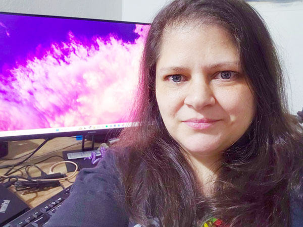

About Me
I'm from Buenos Aires, Argentina, but five years ago I moved to Paraguay with my husband and our 12-year-old cat. Moving to another country helped me in my journey to become a graphic designer. The same braveness I used to move, I applied in pursuing this career that keeps taking shape. I'm also a BYU-Pathway student, and since I arrived in Paraguay, I finished my Social Media Marketing Certificate and made changes to my career path to do Graphic Design fundamentals. I also completed a Web Front-End Certificate and an Associate degree in Applied Technology. Now I'm working towards a Communication bachelor's degree.
I always enjoy learning about design and crafting. I like to sew, embroider, knit, and do other crafts that cross my path. I also enjoy creating in digital format. One of my favorite works was a Graphic Design course project which combined handmade crafting to incorporate into the design (see below).
I love spending time with friends and family, and whenever I can, I love to help them with my knowledge and talents. and create designs for them, from birthday cards and decorations to posts for their business and endeavours.
I recently started a job writing knowledge articles for students and support for agents, and I'm excited to combine everything I studied and I learned in my previous job as a support agent into this role. I'm also working towards a career that combines content creation and teaching skills like instructional design and UX writing. I'm looking for opportunities where clear communication actually makes a difference for the people on the other end.
